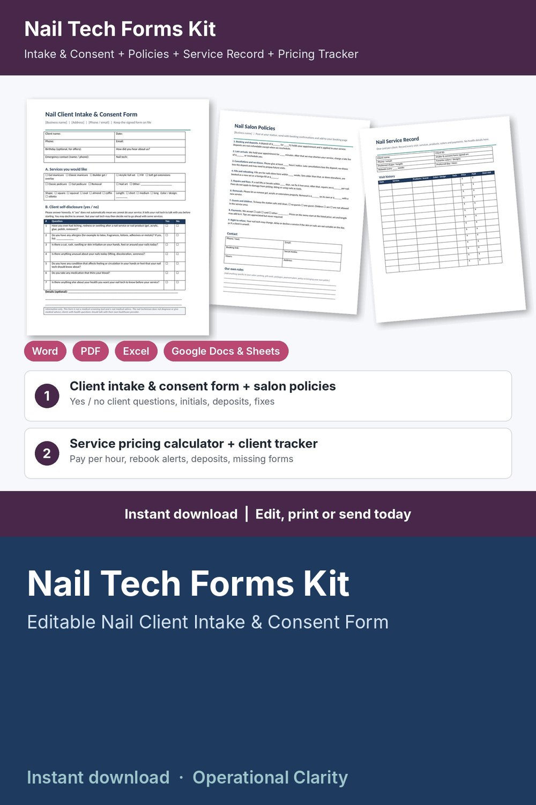

Nail Tech Forms Kit

Price your services, book clients, get the intake and consent form signed and know when each client is due back: a complete nail tech forms kit with a working pricing calculator and client tracker, not just a few printable pages.
WHAT'S INSIDE
- Nail Client Intake & Consent Form (Word + PDF, 2 pages): client details, services wanted with shape and length, simple yes / no client self-disclosure questions, 8 initialed acknowledgments (results vary, no picking or peeling, proper removal, written aftercare received, salon policies agreed), consent and release, photo consent, client and nail tech signatures, review / update log.
- Nail Salon Policies (Word + PDF): 9 ready-to-edit policies for deposits, late arrivals, cancellations and no-shows, fills, repairs and fixes, removals, guests and children, payments and right to refuse, plus a blank page for your own aftercare instructions.
- Nail Service Record Card (Word + PDF, 2 pages): visit history with products, colors, tech, price and next visit; repairs and fixes log; deposits and gift card balance; product notes.
- Service Menu & Price List (Word + PDF): editable menu with times and prices for manicures, enhancements, pedicures and add-ons.
- Nail Tech Pricing Calculator & Client Tracker (Excel / Google Sheets, 6 tabs):
* Service Menu: minutes, product cost and your price for each service; suggested price from your target hourly pay, overhead and card fees; what you keep per service and your real pay per hour; BELOW SUGGESTED flag
* Settings: target pay, monthly overhead, booked hours, card fees, deposit % and minimum, rounding
* Clients: contact details and preferences (shape, length, colors), visits, total spent, last visit, next visit due and rebook alerts (REBOOK NOW / DUE SOON / BOOKED); no health information stored
* Appointments: service and add-on looked up from your menu, discounts, deposits, refunds, status (booked / completed / no-show / cancelled), consent form on file flag, balances and alerts (CONSENT MISSING / BALANCE DUE / DEPOSIT DUE / UPCOMING / UPDATE STATUS)
* Dashboard: revenue, tips, product costs, card fees, what you keep, pay per hour worked, average ticket, no-show rate, deposits held, month-by-month and service-by-service tables, chart
- START HERE guide (PDF)
HOW IT WORKS
1. Enter your target pay, overhead and card fees on Settings.
2. Add your services on the Service Menu tab, fix anything flagged BELOW SUGGESTED, and copy your prices into the printable Service Menu.
3. Send new clients the policies and the Intake & Consent Form before their first visit.
4. Log each booking and deposit; price, time and product cost fill in automatically.
5. After each visit, record payment and tip, and watch the alerts for missing forms, balances, deposits and clients due to rebook.
Example data (10 services, 14 sample clients, 32 appointments) shows how it all connects; delete it and type your own. Yellow cells = type here, green cells = calculated.
FORMATS
- Word .docx (edit in Microsoft Word, Google Docs, Pages or LibreOffice) + PDF, US Letter
- Excel .xlsx (works in Excel and Google Sheets)
This is an instant digital download, no physical item will be shipped.
Editable template, not legal advice. Have it reviewed by a local attorney and check your state board of cosmetology and local requirements (consent wording, client records) before you use it. The client questions are simple yes / no self-disclosures: information only, not a medical screening tool and not medical advice. No aftercare or medical advice is included.